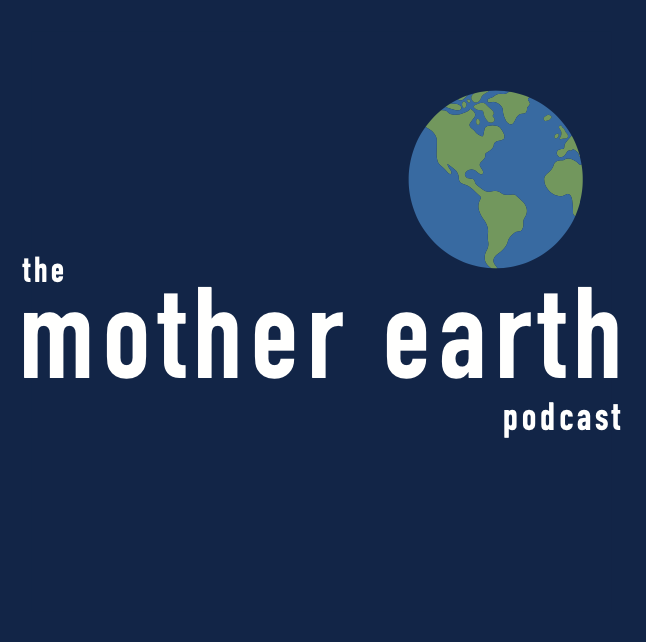
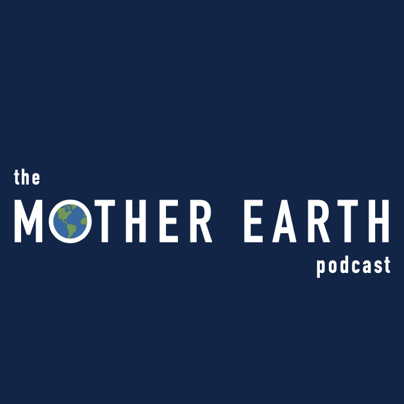
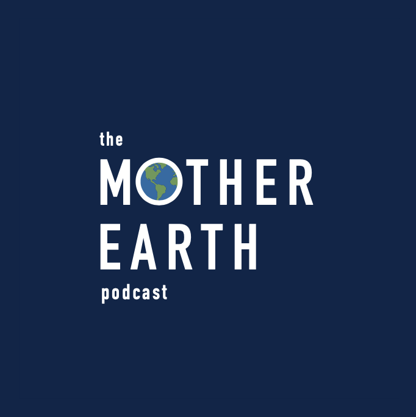
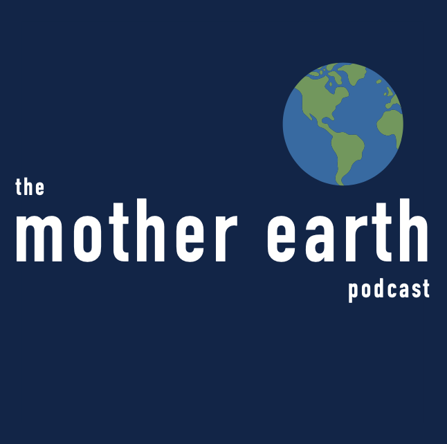
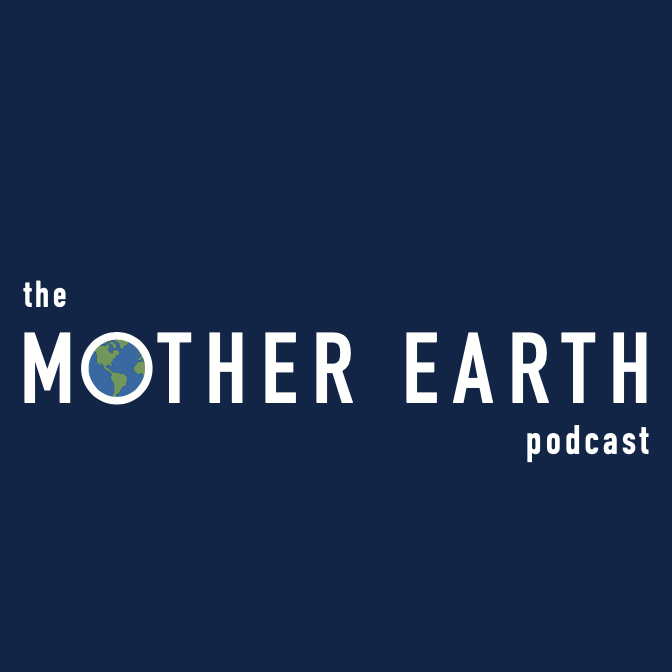
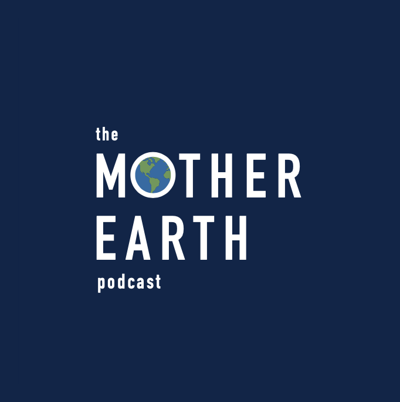

Mother Earth Podcast
2020
For this project, I was tasked with designing the logo and visual identity for a newly launched environmental podcast, The Mother Earth Podcast. In less than a week, I had turned around a complete visual identity, including color pallette, logo, typesetting and visual elements, for use on their website, social media + marketing purposes. Inspiration for the logo came from the NASA image "Blue Marble", which marked the first Earth day in 1970. The podcast launched close to the 50ths anniversary of Earth Day and wanted to evoke that image of earth floating in space, while still remaining approachable and hopeful for the future.
The Blue Marble: The View From Apollo 17
 





early logo iterations
The client wasn't sure how they wanted the earth to be incorporated into the final logo - so I gave three options of the earth: centered with the text overlayed, the earth slightly above and to the right of the text and the earth as part of the words, filling in the 'o' in Mother. The client was most interested in the last two options, so we played around with scale, typography + color before landing on a pallet + type that worked with the vision for the podcast.
Since the focus on the podcast was on environmental issues, I decided to make 'earth' the largest to create a sense of hierarchy. 'Podcast' and 'the' were the smallest size, further establishing the hierarchy and placed offset from center to add some visual interest and movement.
The primary use case for the logo was on podcast platforms, such as Apple podcasts + Spotify. That meant that the logo would need to fit easily in a square (the expected format for logos on those platforms).
The final logo for the Mother Earth podcast
Of course, other use cases for the logo might come up where the square format may be less ideal or when the logo would need to have a transparent background, so I designed a secondary, inverted logo, as well as making the earth a brand mark for use cases when the full logo wouldn't scale well.
The inverted logo and brandmark